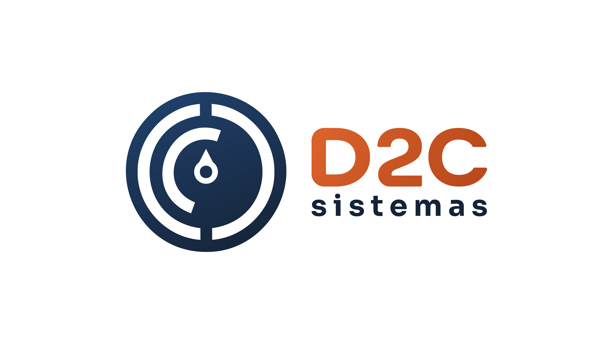
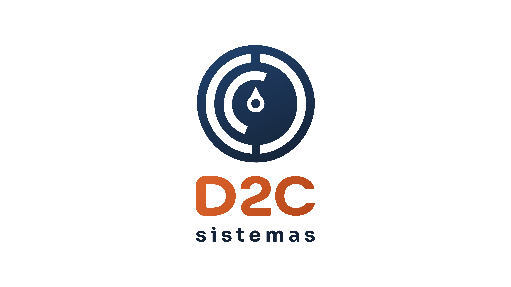
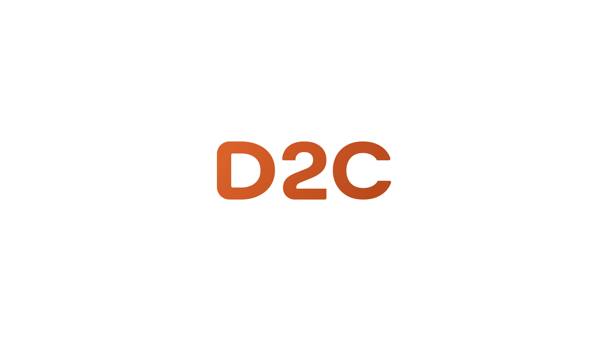
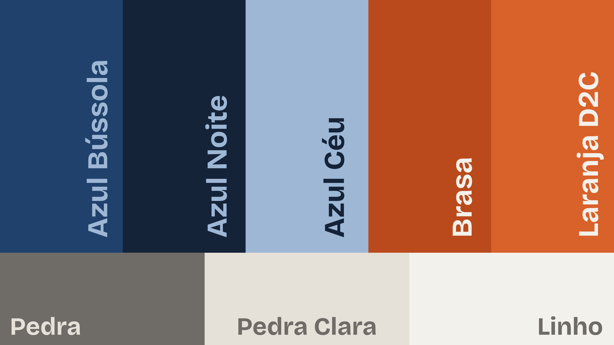
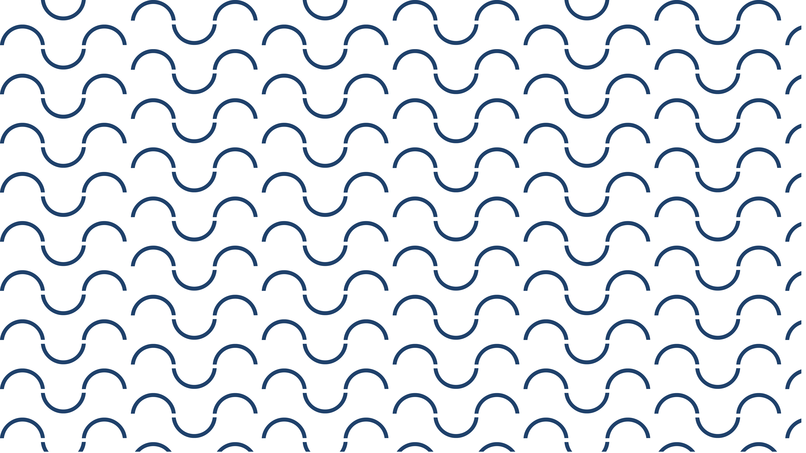

Novembro de 2026
As campanhas e a marca, no mesmo lugar.
As peças que estavam na pasta da D2C agora entram no site: os criativos de novembro, a identidade e o tomo da marca. Cada campanha aparece uma vez, no formato principal.
Criativos
O que a D2C publicou em novembro.
Identidade
Logo, cor e o padrão da bússola.
O pacote tem 45 variações de logo em PNG, JPG e SVG. Aqui ficam as aplicações que mudam de fato: horizontal, vertical, só o nome, a paleta e o padrão. As 45 versões seguem para download.




